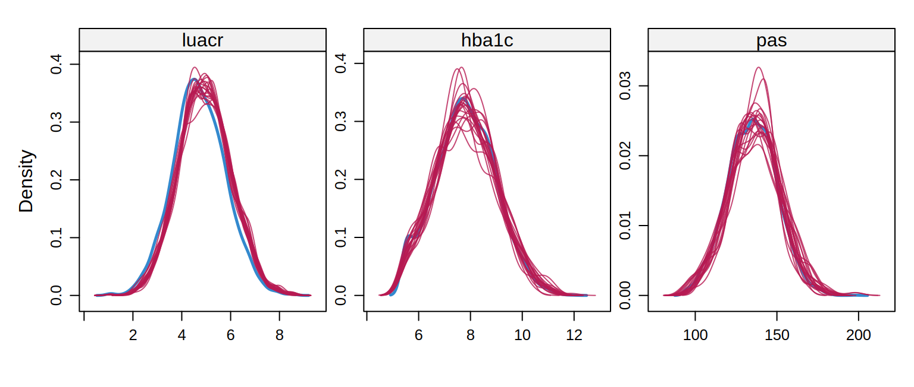

library(tidyverse)
library(mice)
ckd <- read_csv("Bases/ckd_faltantes.csv") |>
mutate(sexo = factor(sexo, levels = c("Mujer", "Hombre")),
luacr = log(uacr)) |> # imputar ln(UACR): distribución más simétrica
select(pendiente_tfg, isglt2, edad, sexo, hba1c, pas, tfg_basal, luacr, ecv)
oraculo <- read_csv("Bases/ckd_isglt2_oraculo.csv") |>
mutate(luacr = log(uacr), sexo = factor(sexo, levels = c("Mujer", "Hombre")))
formula_mod <- pendiente_tfg ~ isglt2 + I(edad / 10) + sexo + hba1c + pas + tfg_basal + luacr + ecv
referencia <- coef(lm(formula_mod, data = oraculo)) # estimaciones con los datos completos (solo posible por la simulación)Imputación múltiple con mice
La idea
La imputación múltiple (IM) reemplaza cada dato faltante no por un solo valor, sino por varios valores plausibles (por ejemplo, 20), creando 20 bases completas. Se analiza cada una igual y se combinan los resultados con las reglas de Rubin. La variabilidad entre las bases refleja la incertidumbre por los datos que faltan: un solo valor imputado la ignoraría.
Tres pasos:
-
Imputar (
mice()): crear m bases completas. -
Analizar (
with()): ajustar el modelo en cada una. -
Combinar (
pool()): unir las estimaciones con las reglas de Rubin.
Paso 1: imputar
Cada variable con faltantes se imputa con un modelo de regresión que usa todas las demás como predictores (ecuaciones encadenadas, FCS). La imputación se repite en ciclos (iteraciones) hasta que se estabiliza.
Class: mids
Number of multiple imputations: 20
Imputation methods:
pendiente_tfg isglt2 edad sexo hba1c
"" "" "" "" "pmm"
pas tfg_basal luacr ecv
"pmm" "" "pmm" ""
PredictorMatrix:
pendiente_tfg isglt2 edad sexo hba1c pas tfg_basal luacr ecv
pendiente_tfg 0 1 1 1 1 1 1 1 1
isglt2 1 0 1 1 1 1 1 1 1
edad 1 1 0 1 1 1 1 1 1
sexo 1 1 1 0 1 1 1 1 1
hba1c 1 1 1 1 0 1 1 1 1
pas 1 1 1 1 1 0 1 1 1-
m = 20: 20 bases imputadas. -
method = "pmm": predictive mean matching: imputa tomando valores observados de pacientes con predicción parecida. Mantiene la forma de la distribución y evita valores imposibles. Es una buena opción por defecto para variables continuas. (Otros:normpara continuas normales,logregpara binarias,polyregpara categóricas.) -
maxit = 10: iteraciones.
Reglas para especificar el modelo de imputación
Importante🎯 Lo que debe incluir el modelo de imputación
- Todas las variables del modelo de análisis, incluido el desenlace (aquí, la pendiente de TFGe). Omitir el desenlace atenúa la asociación con el desenlace.
- Las interacciones y no linealidades que luego se usarán en el análisis (o imputar por separado en cada grupo).
- Variables auxiliares: predictores de la falta o de la variable imputada, aunque no estén en el modelo de análisis (mejoran la plausibilidad de MAR).
- Variables en la misma escala que se analizará (aquí
luacr, nouacr).
Revisar la imputación
Convergencia
Las líneas (una por imputación) deben mezclarse sin tendencia: ya es el caso.
Los valores imputados, ¿son plausibles?
densityplot(imp, ~ luacr + hba1c + pas, layout = c(3, 1))
La línea azul (observados) y las rojas (imputados) deben ser parecidas salvo que haya razones para que difieran. Aquí los imputados de luacr tienen un promedio algo menor, porque quienes faltan son mayores y con mejor TFGe, que tienen menos albuminuria: es lo esperado bajo MAR.
Paso 2 y 3: analizar y combinar
ajustes <- with(imp, lm(pendiente_tfg ~ isglt2 + I(edad / 10) + sexo + hba1c + pas + tfg_basal + luacr + ecv))
combinado <- pool(ajustes)
resumen_pool <- summary(combinado, conf.int = TRUE)
resumen_pool |> select(term, estimate, std.error, `2.5 %`, `97.5 %`) |> mutate(across(where(is.numeric), \(x) round(x, 3))) term estimate std.error 2.5 % 97.5 %
1 (Intercept) 5.347 0.253 4.851 5.843
2 isglt2 1.317 0.039 1.241 1.392
3 I(edad/10) -0.454 0.019 -0.491 -0.417
4 sexoHombre 0.016 0.034 -0.051 0.084
5 hba1c -0.266 0.016 -0.298 -0.234
6 pas -0.019 0.001 -0.021 -0.017
7 tfg_basal 0.016 0.002 0.012 0.019
8 luacr -0.186 0.023 -0.232 -0.141
9 ecv -0.541 0.039 -0.618 -0.464Comparar con casos completos y con los datos completos
cc <- lm(formula_mod, data = ckd)
tibble(
analisis = c("Datos completos (referencia)", "Casos completos", "Imputación múltiple (m = 20)"),
efecto_isglt2 = c(referencia["isglt2"], coef(cc)["isglt2"], resumen_pool$estimate[resumen_pool$term == "isglt2"]),
coef_luacr = c(referencia["luacr"], coef(cc)["luacr"], resumen_pool$estimate[resumen_pool$term == "luacr"]),
n_analisis = c(nrow(oraculo), nobs(cc), nrow(ckd))
) |> mutate(across(c(efecto_isglt2, coef_luacr), \(x) round(x, 3)))# A tibble: 3 × 4
analisis efecto_isglt2 coef_luacr n_analisis
<chr> <dbl> <dbl> <int>
1 Datos completos (referencia) 1.34 -0.225 5000
2 Casos completos 1.25 -0.182 2991
3 Imputación múltiple (m = 20) 1.32 -0.186 5000La IM usa a los 5 000 pacientes; el efecto del iSGLT2 (1.32) se aproxima más a la referencia (1.34) que el de casos completos (1.25). Para la UACR, ambos están por debajo de la referencia (−0.18 y −0.19 vs −0.22) pero dentro del intervalo, porque el coeficiente de una variable con 33 % de faltantes lleva mucha incertidumbre, que la IM reconoce con un error estándar mayor.
Las reglas de Rubin
Con m imputaciones, cada una da una estimación \(\hat Q_j\) y una varianza \(U_j\). Rubin combina:
\[ \bar Q = \frac{1}{m}\sum_{j=1}^m \hat Q_j \qquad \bar U = \frac{1}{m}\sum_j U_j \quad(\text{dentro}) \qquad B = \frac{1}{m-1}\sum_j (\hat Q_j - \bar Q)^2 \quad(\text{entre}) \qquad T = \bar U + \left(1 + \frac{1}{m}\right)B \]
El error estándar total es \(\sqrt{T}\). La fracción de información perdida (\(\lambda\)) mide cuánta incertidumbre se debe a los faltantes:
# A tibble: 9 × 5
term estimate riv lambda fmi
<fct> <dbl> <dbl> <dbl> <dbl>
1 (Intercept) 5.35 0.047 0.045 0.045
2 isglt2 1.32 0.07 0.066 0.067
3 I(edad/10) -0.454 0.021 0.021 0.021
4 sexoHombre 0.016 0.013 0.013 0.014
5 hba1c -0.266 0.171 0.146 0.148
6 pas -0.019 0.076 0.07 0.071
7 tfg_basal 0.016 0.041 0.039 0.04
8 luacr -0.186 0.77 0.435 0.446
9 ecv -0.541 0.023 0.022 0.022fmi (fraction of missing information): para luacr es alta (≈ 0.45), porque un tercio de sus valores se imputó; para isglt2 (sin faltantes) es baja. Con una fmi alta, se necesitan más imputaciones (regla práctica: m ≥ porcentaje de casos incompletos, aquí ≥ 40 %).
Cuántas imputaciones
- Hace unos años se usaban 5; hoy se recomiendan 20-100, porque es barato.
- Regla práctica: m ≥ al porcentaje de casos incompletos (aquí ~40 → 40).
- Más imputaciones reducen el error de Monte Carlo (resultados distintos con cada semilla).
imp40 <- mice(ckd, m = 40, maxit = 10, method = "pmm", printFlag = FALSE, seed = 1)Detalles prácticos
Tip💡 Tips para
mice
-
Fija la semilla (
seed) para reproducir. -
methodpor variable:meth <- make.method(ckd); cambia el que quieras (meth["luacr"] <- "norm"). -
predictorMatrix: qué variables predicen a cuál.quickpred(ckd, mincor = 0.1)la acorta si hay muchas. -
Variables derivadas (índice, TFGe calculada): impútalas pasivamente (
~ I(...)) o imputa los componentes y recalcula; imputar una variable y su derivada por separado rompe la coherencia. -
Categóricas: asegúrate de que sean
factor(para que uselogregopolyreg). -
complete(imp, 1)devuelve la base completada de la imputación 1;complete(imp, "long"), todas apiladas. - Nunca analices una sola base imputada y reportes sus errores estándar como si fueran de datos observados.
Advertencia⚠️ Cosas que la IM no hace
- No crea información: si faltan muchísimos datos o no hay predictores, la imputación solo expresa incertidumbre.
- No corrige MNAR (13.6).
- Un modelo de imputación más simple que el de análisis (sin el desenlace, sin la interacción) sesga hacia el nulo: debe ser al menos tan rico (compatibilidad).
Importante🎯 En resumen
-
Imputación múltiple: imputar m veces → analizar cada base → combinar con las reglas de Rubin (
mice,with,pool). - El modelo de imputación debe incluir el desenlace, las variables del análisis (en su escala) e interacciones si las hay; añade auxiliares.
- PMM es una buena opción por defecto; verifica convergencia y la plausibilidad de lo imputado.
- Usa 20-100 imputaciones (≥ % de casos incompletos).
-
Rubin suma la varianza dentro y entre imputaciones;
fmidice cuánta información se perdió.
Ejercicio
- Imputa con
method = "norm"en lugar depmmy compara el coeficiente deisglt2y deluacr. -
Quita el desenlace del modelo de imputación (
predictorMatrix["luacr", "pendiente_tfg"] <- 0). ¿Cómo cambia el coeficiente deluacr? - Aumenta a
m = 50. ¿Cuánto cambia el error estándar del efecto deisglt2?